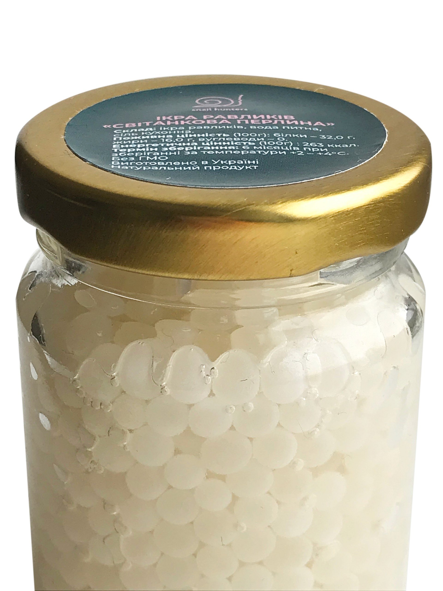
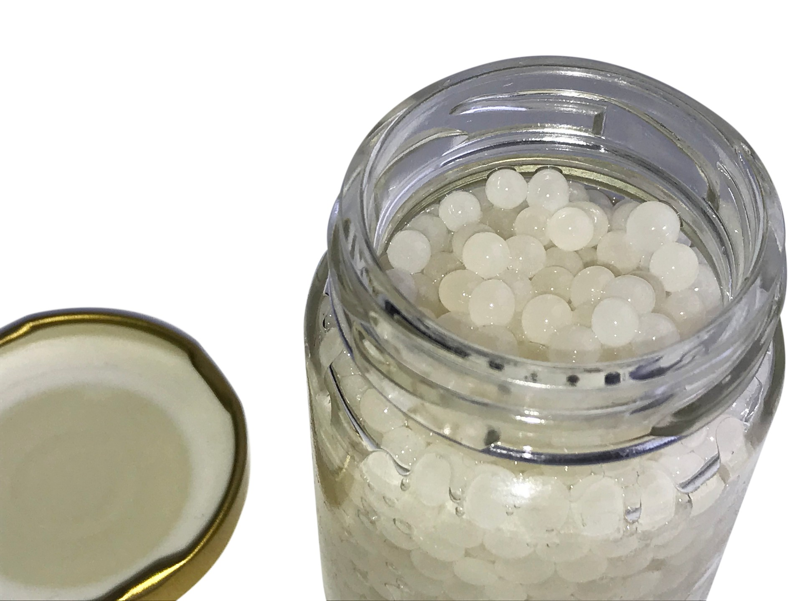
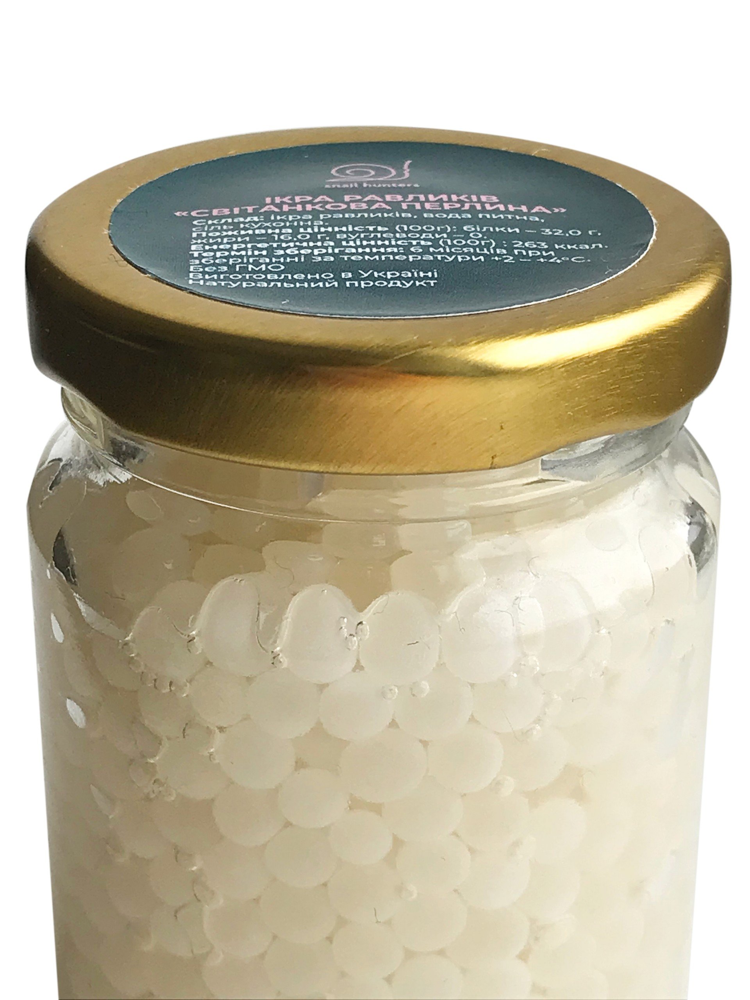
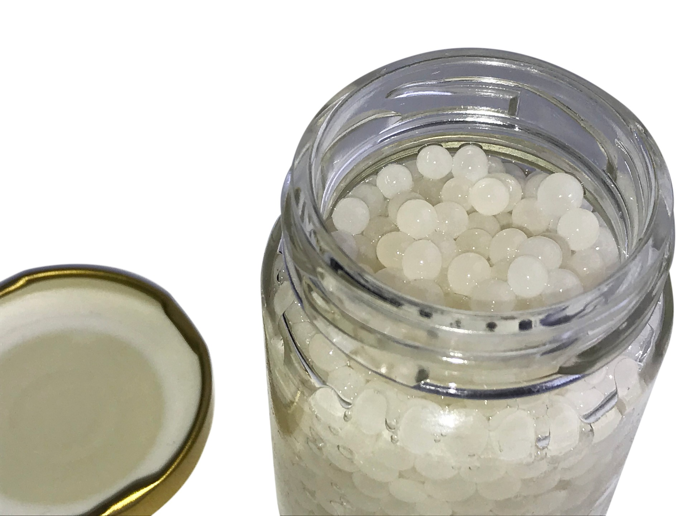

Бажаєте дивовижних відчуттів? Випробуйте вишуканий тонкий аромат маленьких м’яких кульок з ікри равликів, які не дарма заслужили назву – Білі Перлини. Спочатку здивування, потім чарівність і, нарешті, глибина безмежних делікатесів. Ви відчуєте відчуття прогулянки по лісу після дощу, смаки грибів і дубового листя, подорож по осінніх ароматах.
Ця ікра була зібрана виключно вручну на фермі «Мислівці на равликів», розташованої в 80 км від Києва.
ІКРА РАВЛИКІВ «СВІТАНКОВА ПЕРЛИНА»
Склад: ікра равликів, вода питна, сіль кухонна.
Поживна цінність (100г): білки – 32,0 г, жири – 16,0 г, вуглеводи – 0. Енергетична цінність (100г) : 263 ккал.
Термін зберігання: 6 місяців при зберіганні за температури +2 – +4°С.
Маса нетто: 100г.
Без ГМО. Натуральний продукт